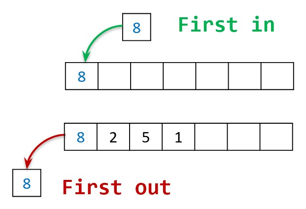
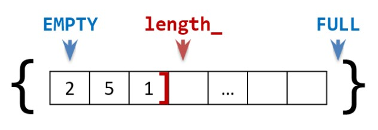
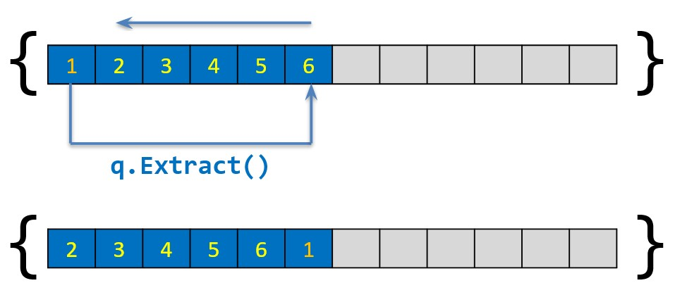
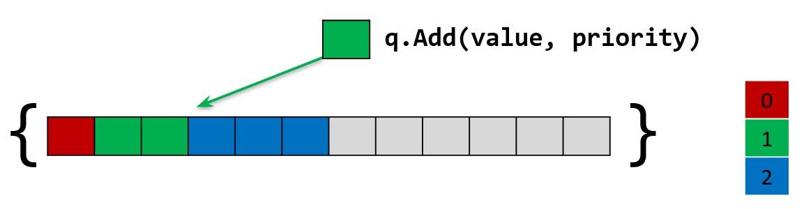
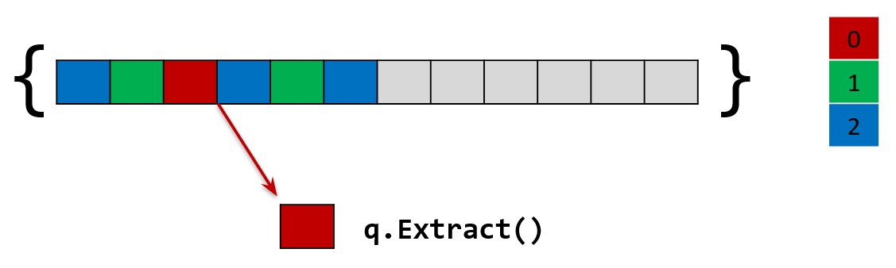

Структуры данных
Очередь
Тимофеев Александр Алексеевич
Очередь. FIFO

Очередь. FIFO

Очередь
Тестирование
- Заполнить очередь до максимума - Вывести содержимое - *Дополнительно:* - *Освободить половину* - *Заполнить освободившееся место* - *Вывести содержимое* - Извлечь все элементы и вывести каждый на экран
v2. Кольцевая очередь

v3.1. Очередь с приоритетами
Приоритетное включение

v3.2. Очередь с приоритетами
Приоритетное исключение

Практика
- Заменить массив на динамический - Реализовать: - Кольцевую очередь - Очередь с приоритетным включением - Очередь с приоритетным исключением - Сделать очередь шаблонной
### Игра в пьяницу - В игре в пьяницу карточная колода раздается поровну двум игрокам. Далее они вскрывают по одной верхней карте, и тот, чья карта старше, <u>забирает</u> себе обе, затем они кладутся <u>под низ его колоды</u>. Тот, кто остается без карт – <u>проигрывает</u>. - В колоде все карты одной масти, а самая младшая карта побеждает самую старшую карту ("шестерка берет туза"). - Пусть в игре участвует <u>10</u> карт, имеющих значения от `0` до `9`. - Программа должна определить, кто выигрывает вывев `first` или `second` и количество сделанных ходов. Если пройдено <u>106</u> ходов игра заканчивается и выводится `botva`. | Входные данные: | Выходные данные: | |---|---| |1 3 5 7 9 | second 5 | |2 4 6 8 0 ||